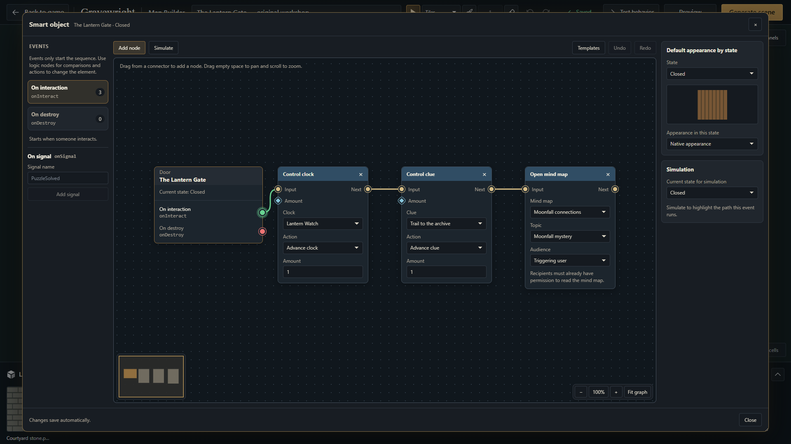
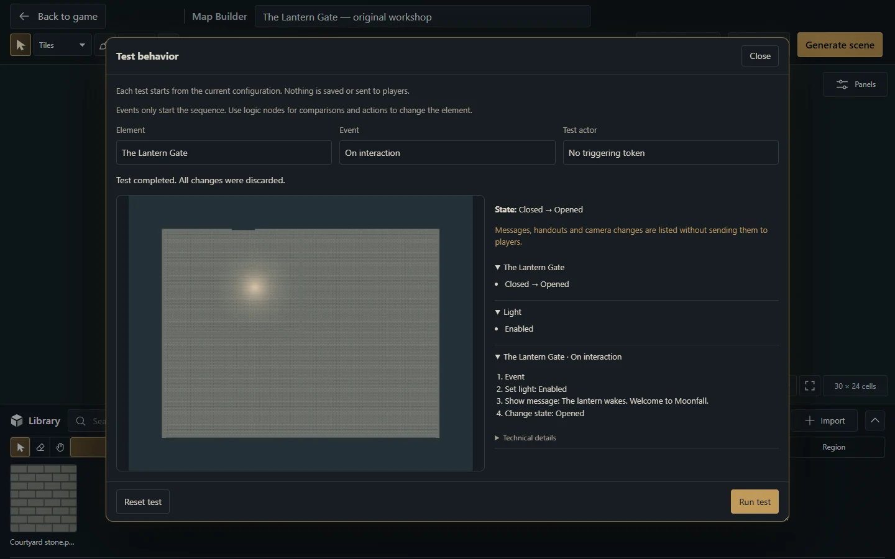

Map Builder: from project to playable scene
Build an editable map, manage assets and publish changes without losing the project.


Project, preview and scene
Only a current campaign GM can edit Builder projects. Open Scenes → New scene → Map Builder. Entering the editor preserves the players' current broadcast. A project stores editable work; generation produces the native scene used in play.
| Action | What it changes |
|---|---|
| Autosave / Ctrl+S | The editable project |
| Preview | A temporary view including all project layers |
| Generate scene | A new private native scene |
| Update scene | The same linked native scene |
| Activate for players | Scene visibility and the player broadcast |
Open an existing scene or Universal VTT map
Use Edit Scene on the table to open the current scene's linked project or adopt its compatible native geometry. Adoption and Import Universal VTT share the native scene adapter. A Builder import creates a linked scene and editable project; a scene-directory import creates only the scene, which can be adopted later. A flattened background remains one image: source brushes and artwork layers cannot be reconstructed. Review import warnings and test the grid, doors and lights before player activation. See Universal VTT.
Build your first room
Name the project in the header. Set dimensions, cell size and background in Panels → Settings.
Choose Tiles for grid-oriented materials or Painting for softer terrain work. Configure the brush in Panels → Tools.
Import authorized images in Library → Import and classify them as floor, wall, door or object. Families and collections help organize reusable materials.
Paint the floor, draw walls and doors and add objects, lights or effects. A door is an independent segment; uploading a map image does not detect its walls.
Use Panels → Layers to select, name, lock or hide editor layers. Use Panels → Selection for selected-element properties.
Wait for the saved status, then inspect Preview. Hidden editor layers still appear in preview and generation.
Choose Generate scene. Later reopen the project through Panels → Projects or Edit with MapBuilder on its linked scene, then choose Update scene.
Activate the scene for players when ready.
Import a finished image
Choose Library → Import → Import ready-made map, select an upload or existing campaign image and enter map dimensions in cells and cell size. This creates a background beneath your additions. It does not reconstruct the image's original objects. Changing the background preserves existing coordinates; a dimension change that would exclude objects is refused.
Edit an object's properties, appearance and behavior
Select the element and right-click it, press Shift+F10 or use the keyboard's context-menu key. On touch screens, open Panels → Selection → Object options. The same menu offers Properties, Appearance and Behavior, plus the native editor, Edit nodes, torch components or presence filters when that element supports them. Duplicate, Rotate and Delete are also available.
Use Properties for the element's name and supported settings, Appearance for its artwork and visual configuration, and Behavior for its interaction. Enter or leave a name field to apply it; Escape discards that field's pending edit. Names of up to 120 characters keep the element's identity and node connections. Applied property changes save automatically and can be undone. Objects and Empty Objects also offer Ready-made models; follow Smart Objects for all 14 models and their editable nodes.
Valid graph edits save automatically too. Close or Escape waits for pending valid changes; an invalid field stays open for correction. Saving configuration does not operate the mechanism. Use Generate scene or Update scene explicitly to publish project changes.
Useful controls
V selects; F returns to floor painting; E removes an entire object. Area floor erasing is a separate tool. Ctrl+Z undoes, Ctrl+Shift+Z/Ctrl+Y redoes, Space + drag pans, the wheel zooms and 0 fits the map. [ / ] adjusts the brush. With the floor brush active, Shift + left drag changes its size without painting; Escape cancels that adjustment.
Bring tabletop edits back into the project
Edit a generated element in the game, then reopen its project, return to the Builder tab or request Update scene. Compatible manual changes to names, geometry, artwork, lights, effects and Blueprints are imported at those points.
Inspect the imported result. Deleted generated objects disappear from the project; split wall spans remain independently editable. Manually added scene objects stay separate from the editable source.
Continue editing and wait for the saved status. Changes to different properties merge with pending local work. Undoing your local edit preserves imported game changes.
If both sides changed the same property differently, synchronization stops with your local draft preserved. Choose Reload saved project to adopt the server version or Save a copy to retain your work as a new project. Unsupported object-type changes or geometry also stop with a diagnostic; do not force an older revision over the scene.
Review and choose Update scene. It requires current project and scene revisions and remains a GM operation. Synchronizing or saving does not execute behaviors or change the player broadcast.
Updating preserves scene-only tokens, images, lights, effects, drawings and fog, plus the scene's name, folder, visibility, broadcast and environment. Keep map dimensions and cell size unchanged when manual scene content exists. Live door state is preserved; lights, effects and other runtime settings retain their live values when their authored defaults are unchanged. Deliberately changing an authored default applies it on update. Automated Move/Rotate actions leave source geometry unchanged, so an update reapplies authored positions and angles.
Save, recover and respect limits
Autosave records completed edits after a short pause; the header shows waiting, saving or saved. Ctrl+S synchronizes immediately. Returning to the game waits for pending saves; a failure keeps the editor open for retry or explicit discard. A lost response retries the same operation rather than creating another write. A revision conflict pauses saving and keeps the draft: use the explicit reload/copy choices above. Discard changes removes only unacknowledged work. If the initial project or library load fails, use Retry; editing stays blocked so an empty replacement is not created.
Projects allow 32 layers, 2,000 combined objects, 256 classified images and a 1 MB document. Dimensions are 1–200 cells and 16–256 pixels per cell, subject to a shared 16,777,216-pixel image limit or a smaller host limit. Image uploads are limited to 25 MB and 40 million decoded pixels. Maximum dimensions cannot all be used simultaneously.
A browser draft is recovery help, not a backup. Remove asset deletes the campaign resource and may affect other maps; Undo cannot restore the deleted file. Players and streamers cannot edit Builder projects; test player interaction separately from GM editing.
More screenshots for this guide (1)

